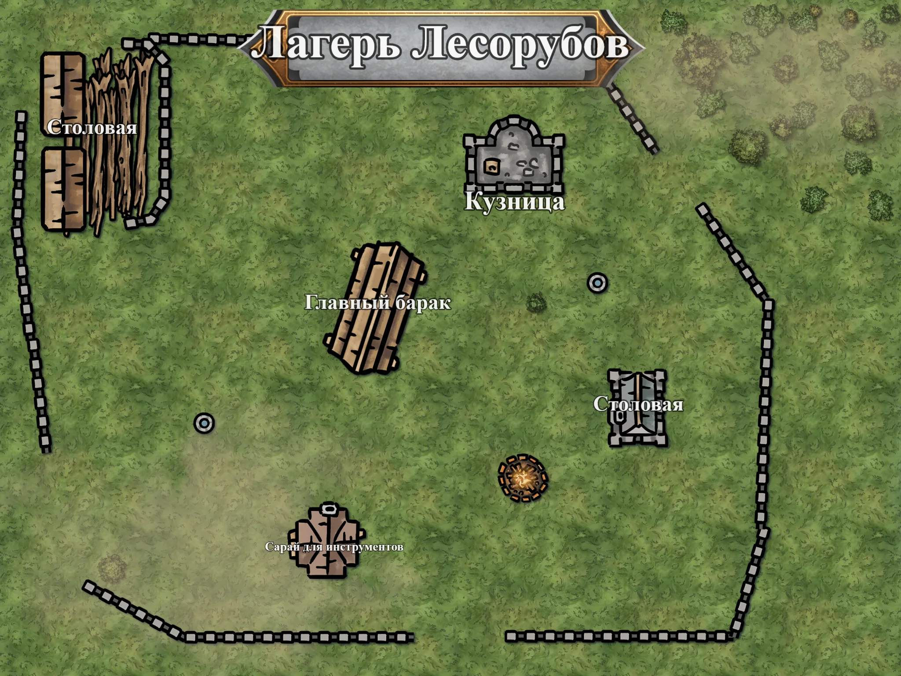

Лагерь Лесорубов
Рабочий лагерь на опушке Глухомани

Общее описание
Население: 25–30 человек (бригада лесорубов + обслуживающий персонал).
Расположение: полдня пути от Тихой Заводи, на опушке Глухомани.
Основа экономики: лесозаготовки для Тихой Заводи и редких торговцев с Развилки. Рубят сосну и дуб, вывозят брёвна раз в неделю.
Быт и распорядок
- Утро (5:00): подъём, завтрак в Столовой №1. Марта раздаёт задания.
- День (6:00–18:00): рубка леса на опушке. Обед в лесу (хлеб, сало, самогон).
- Вечер (18:00–22:00): ужин, посиделки у костра, игры в кости.
- Ночь (22:00): отбой. Караульный обходит лагерь.
- Выходной: раз в неделю, обычно после доставки брёвен. В этот день пьют больше обычного.
Ключевые фигуры
1. Бригадир Марта
Кто: женщина 40 лет, крепкая, с обветренным лицом. Руководит лагерем.
Характер: грубая, прямолинейная, заботливая по-своему. Не верит в «шепотки и туманы», доверяет только топору и собственным рукам.
2. Лесоруб Тоби
Кто: парень 19 лет из Тихой Заводи. Худой, веснушчатый, болтливый и немного трусливый.
Особенности: знает все деревенские сплетни и охотно ими делится. Боится леса, но боится Марты больше.
3. Кузнец Грим
Кто: дварф 60 лет, кряжистый, с седой бородой. Единственный дварф в лагере.
Характер: молчаливый, ворчливый, но справедливый. Скучает по своему народу, недолюбливает Немую Церковь.
4. Повариха Дуня
Кто: женщина 50 лет, полная, добрая, с вечным фартуком. Готовит на весь лагерь.
Характер: болтливая, заботливая, немного суеверная. Кормит всех досыта, но постоянно ворчит на аппетиты рабочих.
5. Старший лесоруб Васька
Кто: мужчина 45 лет, жилистый, со шрамом на щеке. Правая рука Марты.
Характер: серьёзный, немногословный и надёжный. Не пьёт, не играет в кости, работает от рассвета до заката.